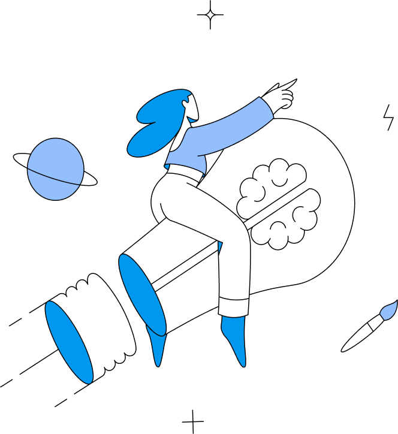
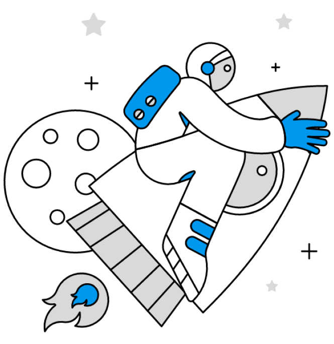

Ongs Parceiras
Deseja cadastrar uma nova ong?
Missão
O NovaOnda tem como missão unir ONGs, governos, empresas e comunidades locais para promover a sustentabilidade dos oceanos. Através de uma plataforma colaborativa, facilitamos a gestão ambiental responsável, o uso de tecnologias inovadoras e o desenvolvimento de soluções econômicas viáveis. Nosso objetivo é enfrentar os desafios globais que ameaçam os ecossistemas marinhos, garantindo um futuro saudável e próspero para nossos oceanos e para a humanidade.
Visão

NovaOnda aspira ser a principal plataforma global para a sustentabilidade oceânica, reconhecida por sua capacidade de fomentar colaborações eficazes e promover práticas ecológicas, sociais e econômicas inovadoras. Enxergamos um mundo onde todas as atividades humanas nos oceanos são realizadas com responsabilidade e respeito pelo meio ambiente, assegurando a saúde e a vitalidade dos ecossistemas marinhos para as gerações futuras.
Valores
Sustentabilidade
Incentivar o desenvolvimento e a implementação de tecnologias avançadas que contribuam para a proteção e conservação dos oceanos. Estimular a criatividade e a busca por soluções novas e eficazes para os desafios oceânicos.
Inovação
Incentivar o desenvolvimento e a implementação de tecnologias avançadas que contribuam para a proteção e conservação dos oceanos. Estimular a criatividade e a busca por soluções novas e eficazes para os desafios oceânicos.
Colaboração
Fomentar a cooperação entre governos, empresas, ONGs e comunidades locais para alcançar objetivos comuns de sustentabilidade. Valorizar o trabalho em equipe e as parcerias estratégicas como pilares para o sucesso das iniciativas